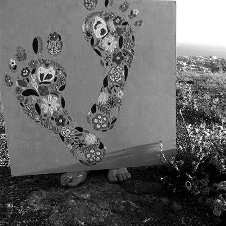

VALORESCETYS
Acerca de esta sitio
En el sentido humanista, se entiende por valor lo que hace que un ser humano sea tal, aquellos sin lo cual perdería la humanidad o parte de ella. Hacer referencia a una excelencia o perfección del ser humano. Son considerados referentes, pautas o abstracciones que orientan el comportamiento humano hacia la transformación social y realización de la persona.
Valores de CETYS Universidad:
